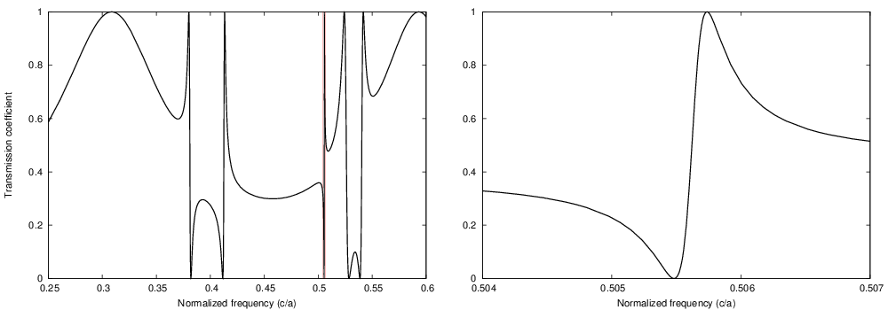

Introduction to S4¶
What is it?¶
S4 (or simply S4) stands for Stanford Stratified Structure Solver, a frequency domain code to solve the linear Maxwell’s equations in layered periodic structures. Internally, it uses Rigorous Coupled Wave Analysis (RCWA; also called the Fourier Modal Method (FMM)) and the S-matrix algorithm. The program is implemented using a Lua frontend, or alternatively, as a Python extension. S4 was developed by Victor Liu of the Fan Group in the Stanford Electrical Engineering Department.

What can it compute?¶
S4 can compute transmission, reflection, or absorption spectra of structures composed of periodic, patterned, planar layers. The electromagnetic fields throughout the structure can also be obtained, as well as certain line and volume integrals. The spectra obtained from S4 are extremely smooth, making it easier for local and global optimization.
Documentation Contents¶
Releases¶
Version 1.1.1
Latest version using Lua 5.2.x and supports Python.
Version 1.0
This is the original version that was published in Computer Physics Communications. It requires on Lua 5.1.x and packs Python bindings.